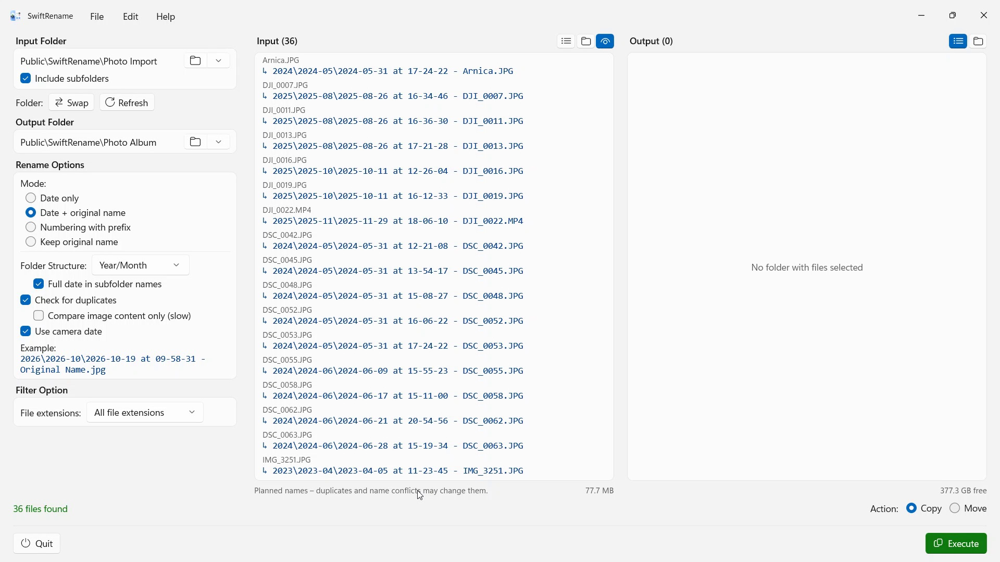

Rename hundreds of photos and files in one go — by camera date, numbered, or sorted into year and month folders. Duplicates are found and skipped automatically.
 Watch the film – 3 minutes on YouTube
Watch the film – 3 minutes on YouTubeFor photographers


SwiftRename is a tool for renaming and organizing multiple files at once. You can rename files by date, number them sequentially, add a prefix, and automatically sort them into a folder structure.
- Requires Windows 11 or later
- 24 languages
- Support: SwiftAppsBavaria@gmx.net
- Privacy Policy